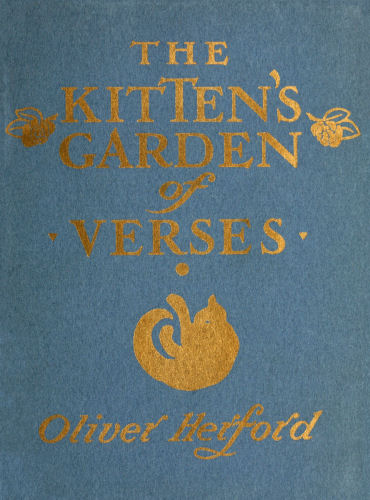
By
New York · Charles Scribner’s Sons
1911
Copyright, 1911, by Oliver Herford
BOOKS BY OLIVER HERFORD
WITH PICTURES BY THE AUTHOR
PUBLISHED BY CHARLES SCRIBNER’S SONS
| THE BASHFUL EARTHQUAKE | $1.25 |
| A CHILD’S PRIMER OF NATURAL HISTORY | $1.25 |
| OVERHEARD IN A GARDEN | $1.25 |
| MORE ANIMALS | net, $1.00 |
| THE RUBAIYAT OF A PERSIAN KITTEN | net, $1.00 |
| THE FAIRY GODMOTHER-IN-LAW | net, $1.00 |
| A LITTLE BOOK OF BORES | net, $1.00 |
| THE PETER PAN ALPHABET | net, $1.00 |
| THE ASTONISHING TALE OF A PEN-AND-INK PUPPET | net, $1.00 |
| A KITTEN’S GARDEN OF VERSES | (postage extra) net, $1.00 |
WITH JOHN CECIL CLAY
| CUPID’S CYCLOPEDIA | net, $1.00 |
| CUPID’S FAIR-WEATHER BOOKE | (postage extra) net, $1.00 |
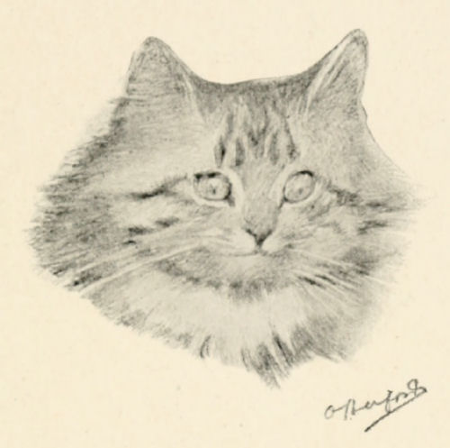
To HAFIZ
| Page | |
| Winter and Summer | 3 |
| Rain | 5 |
| The Shadow Kitten | 7 |
| Education | 9 |
| A Thought | 11 |
| The Lion | 13 |
| The Milk Jug | 15 |
| Happy Thought | 17 |
| Kitten’s Night Thought | 19 |
| The Puncture | 21 |
| Good and Bad Kittens | 23 |
| Anticipation | 27 |
| Foreign Kittens | 29 |
| The Joy Ride | 31 |
| Facilis Ascensus | 33 |
| [Pg viii]The Whole Duty of Kittens | 35 |
| The Outing | 37 |
| The Puppy | 39 |
| The Moon | 43 |
| The Golden Cat | 45 |
| An Inquiry | 47 |
| The Kitten’s Fancy | 49 |
| In Darkest Africa | 51 |
| The Dog | 55 |
| The Game | 59 |
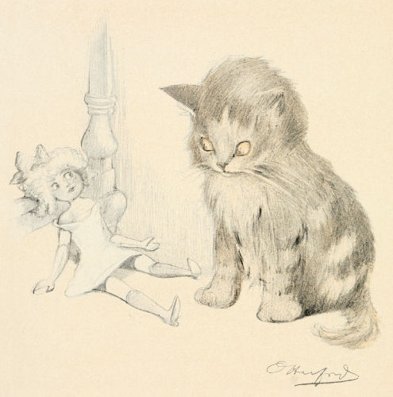
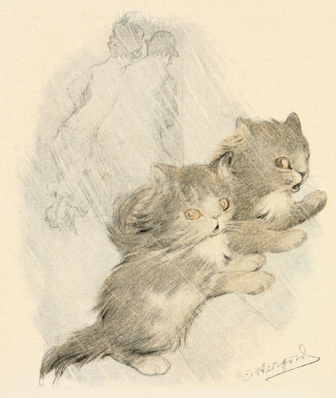
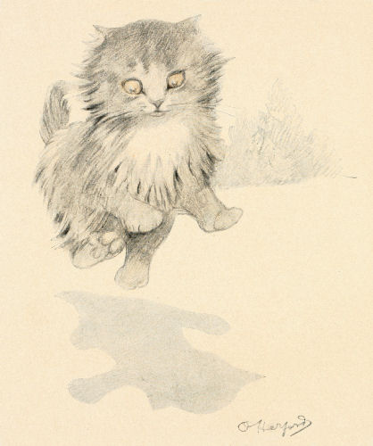
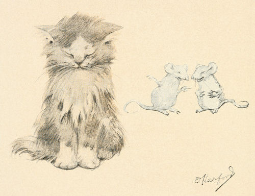
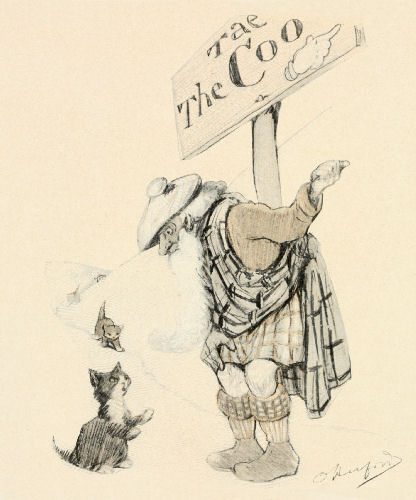
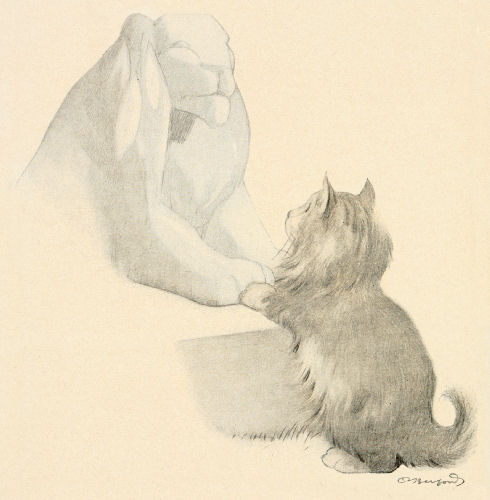
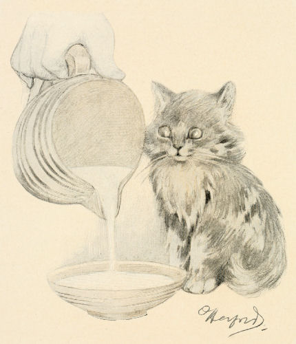
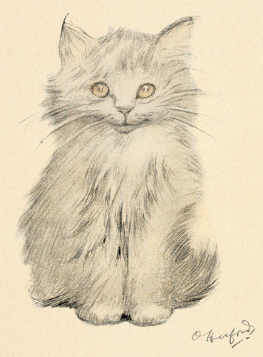
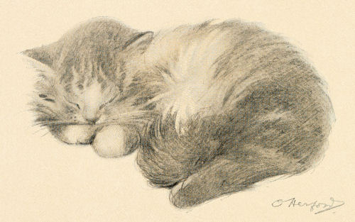
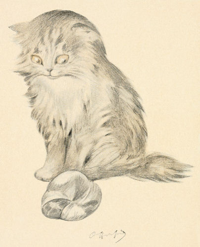
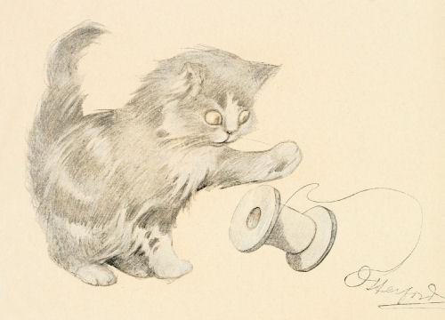
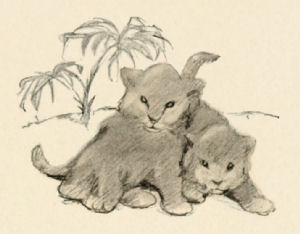
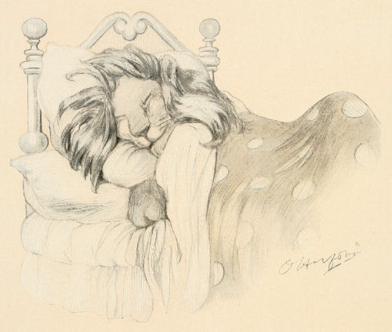
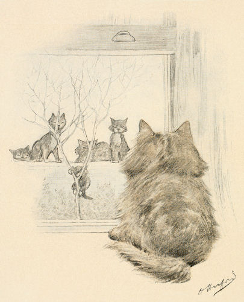
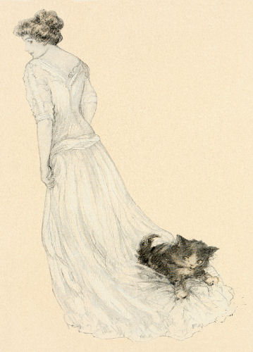
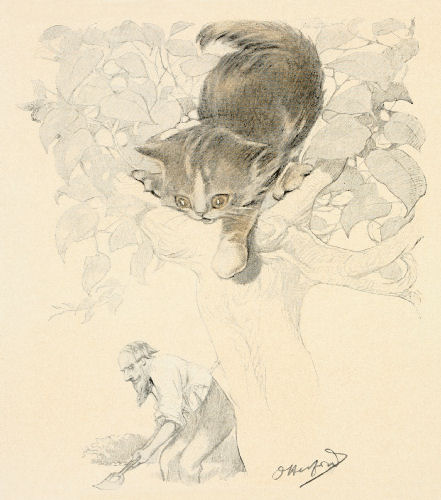
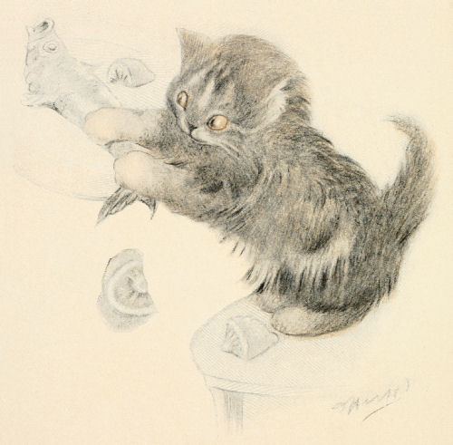
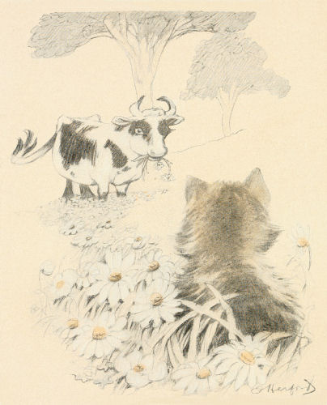
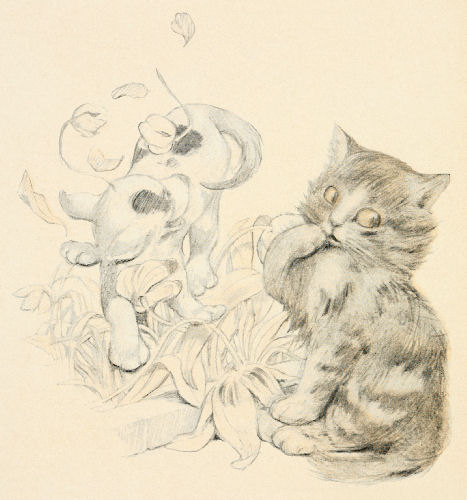
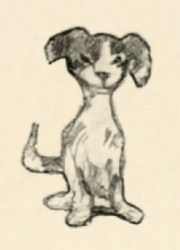
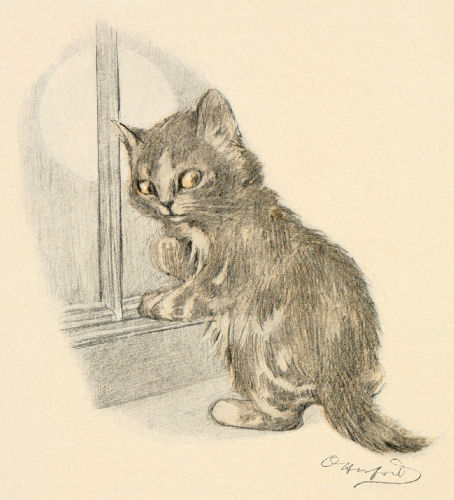
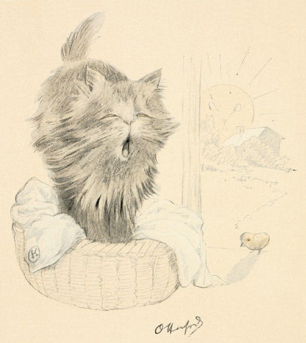
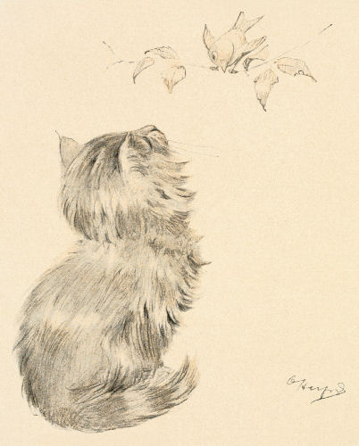
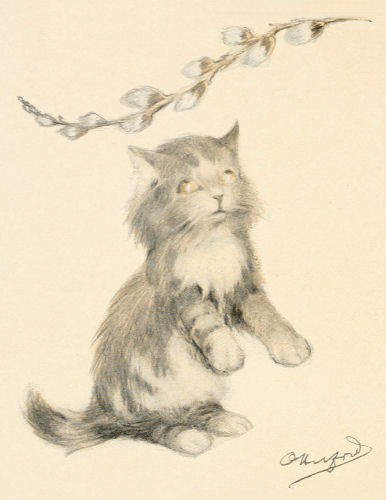
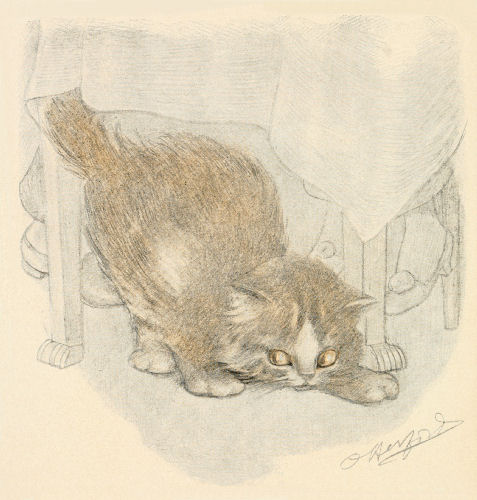
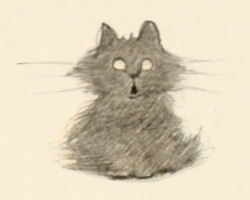
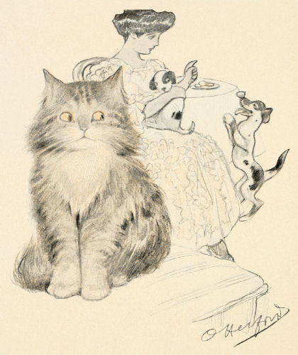
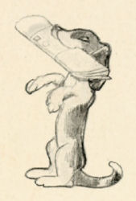
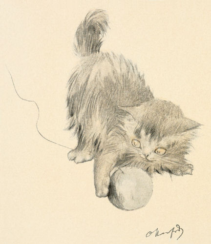
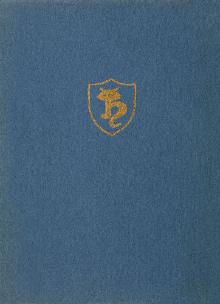